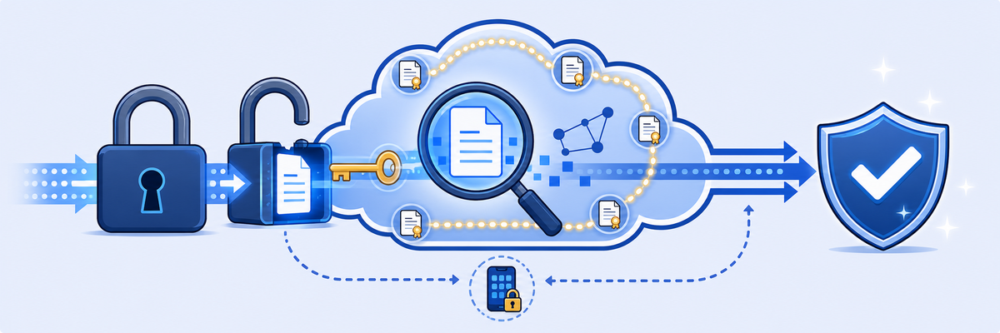

Lab 5: Configure SSL Inspection Policies
Scenario: As the Zscaler administrator, you are tasked with enabling SSL/TLS inspection to monitor and enforce policies on users' encrypted web traffic. Most modern threats hide inside HTTPS traffic, so SSL inspection gives you visibility into encrypted sessions and lets policies be enforced properly. You need to configure SSL inspection for all destinations and define exemptions for trusted or privacy-sensitive categories.
Objectives: By the end of this lab, you will:
- Enable and configure SSL inspection policies for all encrypted traffic.
- Verify Zscaler’s certificate installation on the Windows Corp Client PC.
- Analyze and resolve certificate pinning errors.
- Analyze SSL inspection logs and identify inspection or bypass events.

Note: The Zscaler Root CA Certificate is installed on Windows Client PCs when the Zscaler Client Connector is installed. For Windows devices, the Root CA must be installed in both: (a) the System Certificate Store (Trusted Root Certification Authorities), and (b) the Firefox Certificate Store (based on the setting in the App Profile).
SSL inspection is a trusted man-in-the-middle: ZIA terminates the TLS session from the browser, inspects the plaintext, and opens its own TLS session to the real server.
- After you enable SSL Inspect All, Wikipedia's certificate is issued by Zscaler instead of Let's Encrypt, yet Chrome still says "Connection is secure". What makes the browser accept it, and what would happen on a PC without ZCC?
- Threema fails with a Connection Error even though the Zscaler Root CA is trusted. What is the app checking that the browser isn't, and why is a Do Not Inspect rule the right fix instead of disabling inspection?
- The scenario mentions exemptions for privacy-sensitive categories. Which kinds of sites might an organization choose not to decrypt even if it technically could, and why?
In this task, you will enable SSL inspection for all encrypted traffic.
1 Verify the current SSL Inspection status
- On the Corp Client PC, open a Chrome browser window in Incognito Mode.
- Go to:
www.wikipedia.org
- Go to:
- Click the site information (filter) icon in the URL field.
- Click Connection is secure > Certificate is valid.
Note: You will see that you have received the certificate from the destination web server. The site information icon looks like three horizontal lines connected by dots. In some browsers it is a padlock icon. It's usually shown to the left of the URL in the browser's address bar.
2 Enable SSL Inspection
- Back in the Zscaler Experience Center window, go to Policies > Common Configuration > SSL/TLS Inspection > SSL/TLS Inspection Policy.
- On the SSL Inspection Policy tab, click +Add SSL Inspection Rule.
- Configure the rule as follows:
- Rule Order: 1
- Rule Name:
SSL Inspect All
- Scroll down to the ACTION section and select Inspect under Action.
- Click Save and Activate.
3 Verify the inspection status
- Close the Incognito browser or refresh it (to make sure the new policy is applied).
- Open a new browser window in Incognito Mode and visit
www.wikipedia.org - Click the site information (filter) icon in the URL field > Connection is secure > Certificate is valid.
Note: You will see that you have received a server certificate signed by Zscaler.
In this task, you will check whether the Zscaler Root CA is properly installed on the Corp Client PC.
1 Check the Windows certificate store
- Open the certmgr tool: type
certmgrin the Windows search bar or run it from the command prompt. - Go to Trusted Root Certification Authorities > Certificates.
- Confirm the following:
- The Zscaler Root CA Certificate is listed.
- The certificate is not expired.
2 Verify via Google Chrome
- Open a browser window and type
chrome://certificate-manager/in the address bar. - Click Local certificates.
- Select View imported certificates from Windows.
Certificate pinning is a client-side mechanism that secures applications by checking that the SSL certificate presented by a backend server matches a trusted certificate hard-coded into the application. It helps protect against man-in-the-middle (MITM) attacks, but it can also cause SSL connection failures when the pinned certificate doesn't match an intercepting proxy's certificate, such as Zscaler's SSL inspection certificates. In this task, you will learn two common methods to resolve certificate pinning errors in applications.
1 Recreate the certificate pinning error
- Open a Chrome browser on the Corp Client PC.
- Download Threema Private Desktop for Windows:
- Go to
https://threema.com/en/download - Click Download Apps under Threema Private.
- Click download for Windows. An .msix file is downloaded.
- Go to
- Open the msix file from the Downloads folder and follow the installation steps. Then, from the Start menu, open Threema Beta.
- Observe the error message displayed during installation.
2 Configure an SSL Bypass Rule
- From the SSL Inspection page, click Add SSL Inspection Rule and configure the following:
- Rule Order: 1
- Rule Name:
Bypass Threema - Cloud Applications: click Instant Messaging and select Threema from the list. Click Done.
- Scroll down. Under Action, select Do Not Inspect.
- Click Save and Activate with the Activation icon in the top-right corner.
3 Try the Threema installation again
- Right-click the Windows Taskbar and select Task Manager.
- Find Threema (if present) in the list of running applications.
- Click End Task.
- Reopen the Downloads folder. From the Start menu, open Threema Beta.

4 Analyze SSL Inspection and Bypass Logs
- From the Experience Center, go to Logs > Web Insights > Logs.
- Configure the following:
- Timeframe: Last 1 hour (you can also pick other timeframes, such as Last 2 hours or Current Day).
- Add filters: SSL Inspected and Bypassed Transaction.
- Click Run Query.
Note: Allow time for logs to populate (typically ~5 minutes). Use the available filters and operators to explore the differences between SSL inspection and bypass events.
Note: The Insights page lets you analyze transactions processed by Zscaler through customizable charts and logs. It also has filters and operators to drill down into specific insights for detailed analysis.